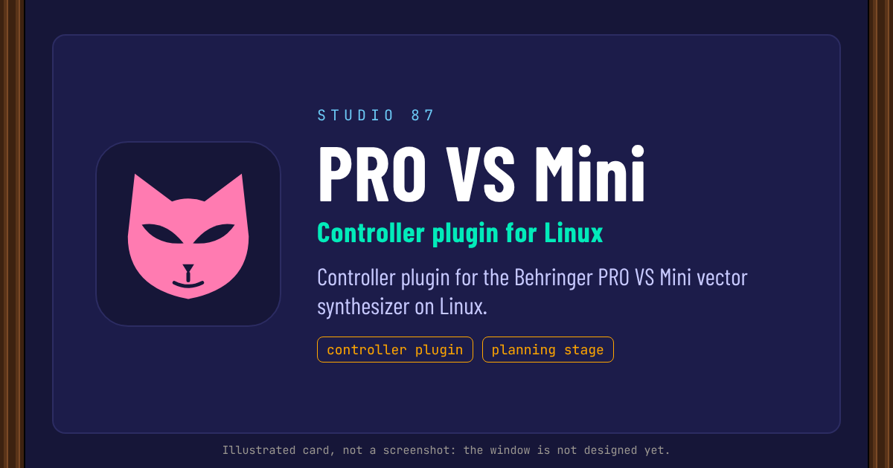

PRO VS Mini Controller
Controller plugin for Linux, planned · Studio 87
A controller plugin for the Behringer PRO VS Mini vector synthesizer on Linux.

Illustrated card, not a screenshot: the window is not designed yet.
Status: planning stage
There is no plugin, no code and no window yet. The repo holds notes on what is confirmed about the device and what is still missing.
What exists today
- Device notes: what is confirmed from the Behringer Quick Start Guide and the firmware 2.0.0 release notes, and the open items.
- README, ROADMAP.md, LICENSE (AGPL-3.0-or-later), icon and the illustrated card above.
What does not exist yet
- Plugin or standalone code, a window, a mockup.
- The full CC list and the SysEx program and pattern layouts (listed as open items in the device notes). No parameter map is written anywhere yet.
Roadmap
Copied from ROADMAP.md in the repo.
- Confirm the CC list and SysEx layouts
- Panel with vector joystick and mix envelope editor
- Program librarian over SysEx
- Plugin and standalone builds on cat-ui
AGPL-3.0-or-later. Not affiliated with or endorsed by any hardware maker named here. All trademarks belong to their owners.